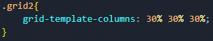
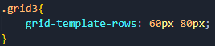
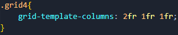
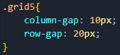
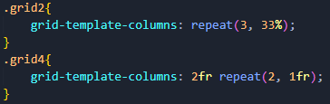
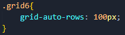
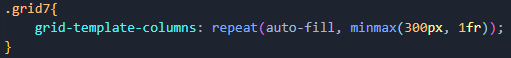
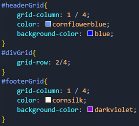

Grid
CSS Grid Layout es un sistema de diseño bidimensional para la web. Le permite distribuir el contenido en filas y columnas. Tiene muchas características que facilitan la creación de diseños complejos.
Para definir una cuadricula se usa el valor grid en la propiedad display. Esto habilita el diseño de cuadrícula; todos los elementos secundarios directos del contenedor se convierten en elementos de cuadrícula.
Los elementos no se verán inmediatamente diferentes. La declaración display: grid brinda una cuadrícula de una columna, por lo que los elementos continuarán mostrándose uno debajo del otro como lo hacen en el flujo normal.
Para ver algo que se parece más a una cuadrícula, se agregan algunas columnas mediante la propiedad grid-template-columns. Esta puede usar cualquier unidad de longitud o porcentaje para crear las columnas mediande la definición de su ancho, así el número de columnas se agregará dependiendo del numero de valores en la propiedad.
Tambien se puede dar un alto a las filas mediante la propiedad grid-template-rows, e igual que con la propiedad anterior, según el número de valores que tenga la propiedad se aplicarán a ese número de filas. si no se define el valor, la altura de dicha fila sera automática.
Unidad fracción fr:
Además de crear cuadrículas usando longitudes y porcentajes, se puede usar la unidad fr para cambiar el tamaño de las filas y columnas de la cuadrícula de manera flexible. Esta unidad representa una fracción del espacio disponible en el contenedor de cuadrícula.
Espacios entre elementos:
Para crear espacios entre elementos, se usan las propiedades column-gap para espacios entre columnas, row-gap espacios entre filas y gap como abreviatura de ambos. Estos espacios pueden ser cualquier unidad de longitud o porcentaje, pero no una frunidad.
Repetición de valores:
Se puede repetir los valores de las propedades de alto y ancho anteriores usando la función repeat(). Esta función tiene 2 argumentos, el número de repeticiones y el valor de la propiedad a repetir.
Propiedades grid-auto:
De forma predeterminada, los elementos creados en la cuadrícula, de manera implícita tienen un tamaño auto, lo que en general significa que son lo suficientemente grandes para acomodar su contenido. Si desea dar un tamaño a los elementos de cuadrícula implícitas, se puede usar las propiedades grid-auto-rows y grid-auto-columns.
De este modo todas las filas de la cuadrícula tienen 100px de alto.
La función minmax()
Aveces altura definida de los elementos no es muy útil si se agrega contenido que es más alto que el elemento, en cuyo caso se produciría un desbordamiento.
La función minmax() permite establecer un tamaño mínimo y máximo para un elemento, por ejemplo, minmax(50px, auto). El tamaño mínimo es de 50 píxeles, pero el máximo es auto, que se expandirá para acomodar más contenido.
Tantas columnas como quepan:
A veces es útil poder pedirle a grid que cree tantas columnas como quepan en el contenedor. Esto se realiza estableciendo el valor de grid-template-columns la función repeat(), pero en lugar de pasar un número, pasar la palabra clave auto-fill. Para el segundo parámetro de la función se usa minmax() con un valor mínimo igual al tamaño mínimo de pista que se gustaría tener y un máximo de 1fr.
Esto funciona porque la cuadrícula crea tantas columnas de 300px como quepan en el contenedor y luego comparte el espacio sobrante entre todas las columnas.
Colocación basada en líneas:
La cuadrícula siempre tiene líneas; estas están numeradas comenzando con 1 y se relacionan con el modo de escritura del documento. Por ejemplo, la línea de columna 1 en inglés (escrita de izquierda a derecha) estaría en el lado izquierdo de la cuadrícula y la línea de fila 1 en la parte superior.
Los elementos de la cuadrícula pueden expandirse especificando la línea inicial y final usando las siguientes propiedades:
- grid-column-start
- grid-column-end
- grid-row-start
- grid-row-end
Todas estas propiedades pueden tener un número de línea como valor. También se pueden utilizar las propiedades abreviadas:
- grid-column
- grid-row
Estos permiten especificar las líneas de inicio y finalización a la vez, separadas por una barra inclinada /.
